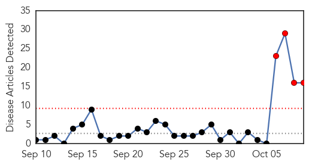
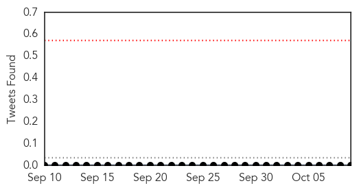
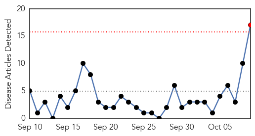
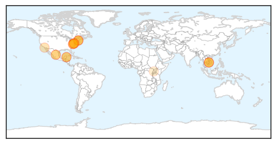
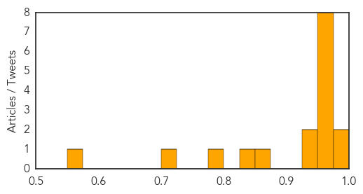

Hepatitis
30-Day Web Trend
4 alerts, 0 warnings

30-Day Twitter Trend
0 alerts, 0 warnings

Article Locations

Article Confidences
Top Articles:
- 0.977
- SGH hep C outbreak: SGH's delay raises questions on info flow, Health News & Top Stories
- 0.914
- Patients Exposed to Hepatitis, HIV After Unsafe Injection Practices
- 0.897
- Measles, HAV vaccination rates low among US international travelers
- 0.884
- Singapore public hospitals explain their infection control measures, Health News & Top Stories
- 0.862
- Hep C: Why doctors say all baby boomers should be tested
- 0.849
- At least 70 people in New Jersey given flu shot from the same needle
- 0.825
- Newborns Now To Receive Hepatitis B Vaccine
- 0.807
- Singapore hospital to screen 951 people after Hepatitis C outbreak
- 0.788
- Another Reason to Never Get a Flu Shot: Nurse Uses Same Dirty Syringe to Vaccinate 70 People in a Row
- 0.741
- New Jersey health officials say nurse reused syringes while giving flu shots - National
- 0.709
- Reps: ‘23 Million Nigerians Infected With Hepatitis B’
- 0.644
- Nobel Prize in Medicine an encouragement for local scientists
- 0.626
- Nurse Giving Workplace Flu Shots Used Same Syringe On 67 People
- 0.614
- New Jersey agency: Nurse giving flu shots reused syringes
- 0.604
- TTSH ‘strengthening overall system, vigilance’ in wake of SGH Hepatitis C cluster
- 0.592
- Dozens of people put at risk after unsafe flu shot
Top Tweets:
-
No tweets found for Oct 09, 2015
Measles
30-Day Web Trend
1 alerts, 0 warnings

30-Day Twitter Trend
0 alerts, 0 warnings

Article Locations
Article Confidences
Top Articles:
- 0.990
- U.S. Risks Major Measles Outbreak, Experts Warn
- 0.978
- Many Americans Traveling Abroad Lack Key Vaccinations
- 0.967
- Don't leave home without them
- 0.965
- Young child diagnosed with measles in northern Virginia
- 0.965
- Young child diagnosed with measles in northern Virginia
- 0.965
- Young child diagnosed with measles in northern Virginia
- 0.958
- Measles back from elimination in Cambodia
- 0.958
- Vaccines: Don't leave home without them
- 0.957
- Measles confirmed in rural Cambodia less than a year after being ‘measles-free’
- 0.955
- Measeles vaccine gaps put U.S. at risk
- 0.940
- Young child diagnosed with measles in northern Virginia
- 0.937
- Many Traveling Abroad Lack Key Vaccinations
- 0.866
- 1 in 8 U.S. kids not protected against measles
- 0.826
- Cambodia Confirms One Measles Case after Elimination of Measles
- 0.789
- WCAX.COM Local Vermont News, Weather and Sports-
- 0.707
- Study: Drop in measles vaccinations may cause more outbreaks
- 0.570
- The most from the coast
Top Tweets:
-
No tweets found for Oct 09, 2015